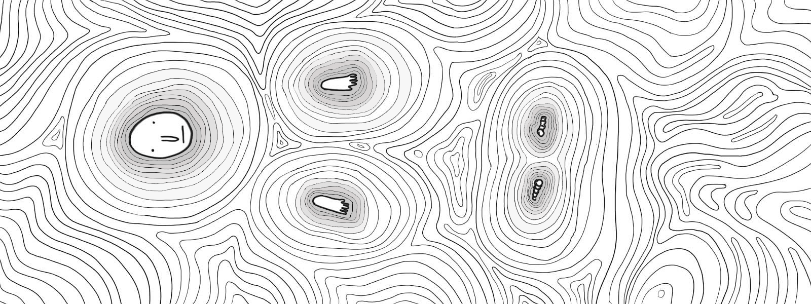
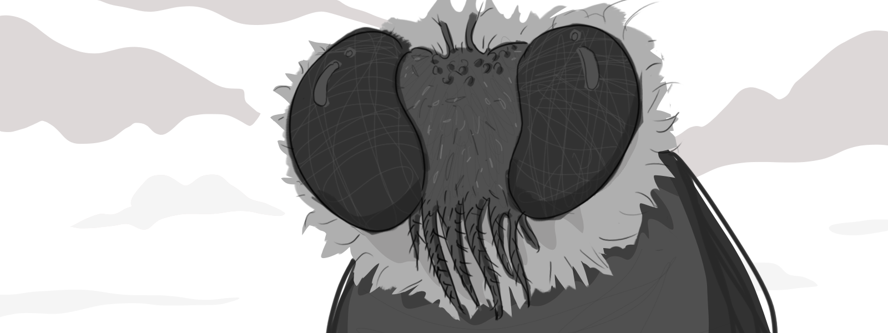
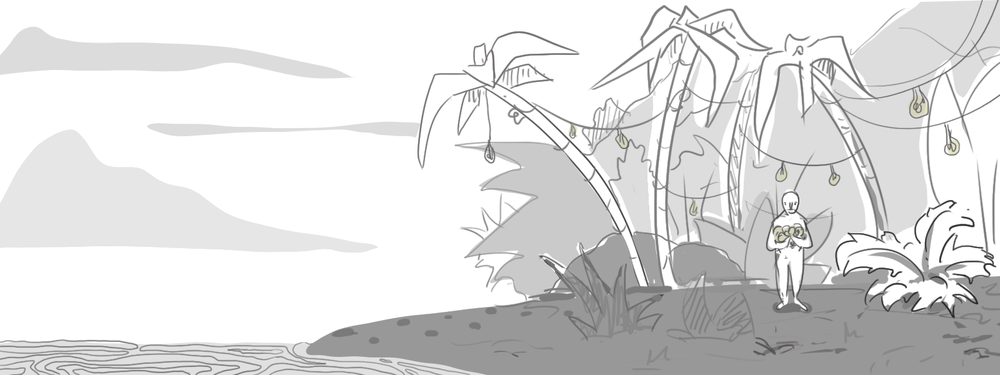
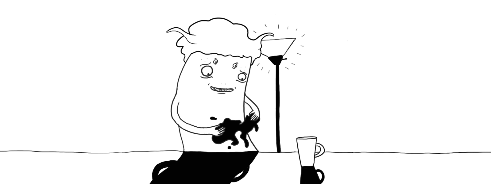

PART I: Volge
 In the gentle swirls of the river Epsilon, Volge floats in deep reverie.

Suddenly, he is rudely woken up by a dark figure towering above him -
"Get out," it shrieked, "you are not dead yet!"

Volge finds his way back ashore, and trudges through a quiet jungle littered with lightbulbs.
He collects an armful of them as if they were fruits.
Volge selects one and eats it. Ichor spills out of his mouth as he chews thoughtfully.
"I suppose I shall go for another swim now," he said to nobody in particular.
PART II: Ande

Ande is quite fond of Shadows:
He likes them so much that he drinks one for breakfast every morning and never grows tired of it.
One day, the Shapes in Ande's favourite Shadow Lamp escaped. Out the window they went!
Here we see Ande trying to catch new ones. He is exhausted.
PART III: Betthe
Betthe collects Shiny Things because they make her happy.
There is a quiet jungle in her backyard which she decorates to her liking.
Occasionally she finds that her Shiny Things have been shattered and painted gold.
"Why, if only they weren't broken. I do really like this new colour."